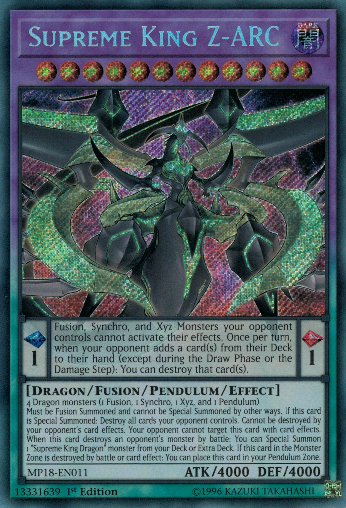
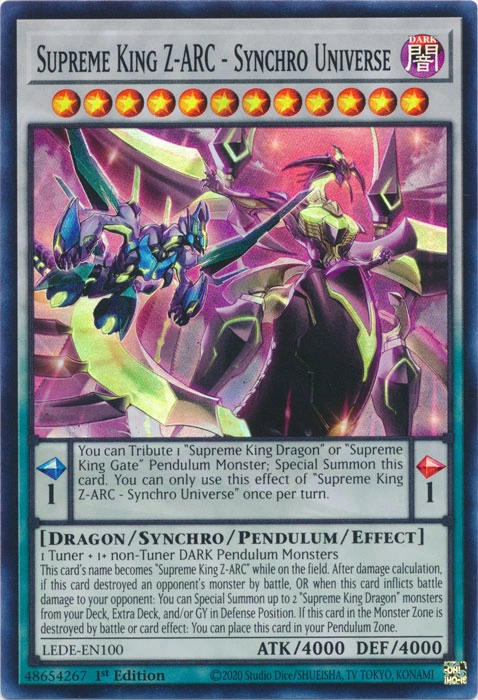
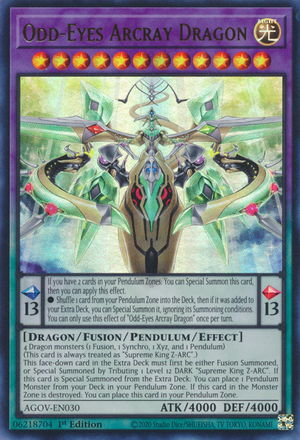
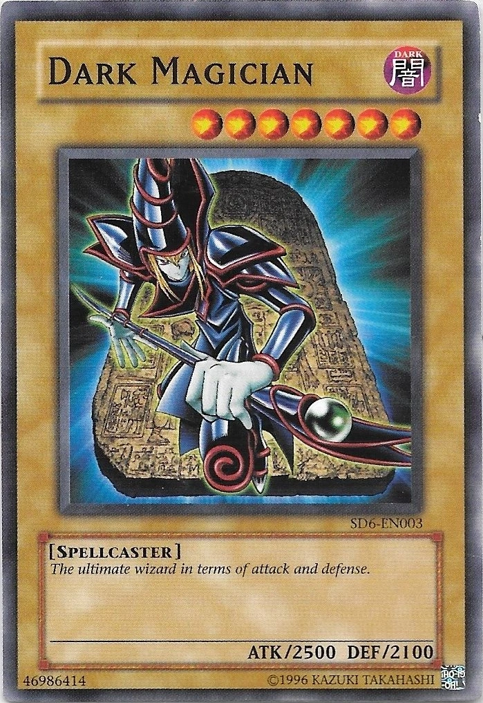
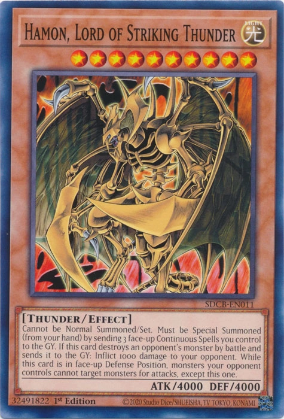
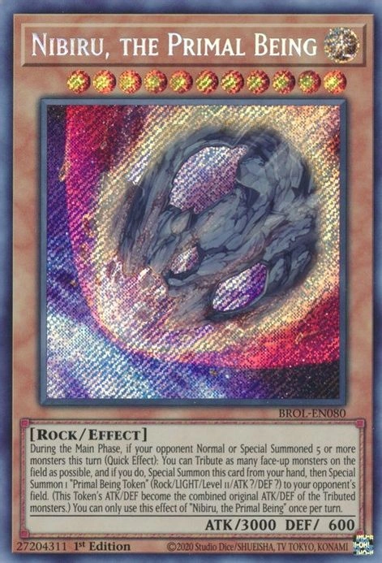

Supreme King Z-ARC
|
Supreme King Z-ARC es un monstruo de nivel 12 con 4000 ATK y 4000 DEF. Debes invocarlo mediante Fusión utilizando 4 monstruos Dragón (1 Fusión, 1 Sincro, 1 Xyz y 1 Péndulo). Una vez Invocado, destruye todas las cartas controladas por tu oponente. Además, no puede ser destruido por los efectos de cartas de tu oponente y no puede ser objetivo de sus efectos. Si destruye un monstruo del oponente en batalla, puedes Invocar Especialmente un monstruo “Supreme King Dragon” desde tu Deck o Extra Deck. |
Supreme King Z-ARC - Synchro Universe
|
Supreme King Z-ARC - Synchro Universe es un monstruo de nivel 12 con 4000 ATK y 4000 DEF. Puedes invocarlo mediante Sincronía utilizando 1 tuner y 1 o más monstruos no tuner Pendulo dark. Una vez Invocado, si destruye un monstruo del oponente en batalla o inflige daño de batalla a tu oponente, puedes Invocar Especialmente hasta 2 monstruos “Supreme King Dragon” desde tu Deck, Extra Deck y/o Cementerio en Posición de Defensa. Además, puedes ofrecer como Tributo 1 Monstruo pendulo “Supreme King Dragon” o “Supreme King Gate” para Invocar Especialmente esta carta |
Odd-Eyes Arcray Dragon
|
Odd-Eyes Arcray Dragon es un monstruo de nivel 12 con 4000 ATK y 4000 DEF. Puedes invocarlo mediante Fusión utilizando 4 monstruos Dragón (1 Fusión, 1 Sincro, 1 Xyz y 1 Péndulo). Este monstruo es siempre tratado como Supreme King Z-ARC. Si este monstruo es Invocado Especialmente desde el Deck Extra, puedes colocar 1 Monstruo PÉNDULO desde tu Deck en tu Zona de Péndulo. Además, si este monstruo en la Zona de Monstruos es destruido, puedes colocarlo en tu Zona de Péndulo. |
Dark Magician |
El mas grande de los magos en cuanto al ataque y defensa |
Hamon, Lord of Striking Thunder |
Hamon, Lord of Striking Thunder no puede ser Invocado de Modo Normal o Colocado. Debes Invocarlo Especialmente (desde tu mano) al enviar 3 Cartas Mágicas Continuas boca arriba que controles al Cementerio. Si esta carta destruye un monstruo del oponente en batalla y lo envía al Cementerio, inflige 1000 puntos de daño a tu adversario. Además, mientras esta carta esté en Posición de Defensa boca arriba, los monstruos controlados por tu oponente no pueden seleccionar monstruos para ataques, excepto a esta carta. |
Nibiru, el Ser Primitivo |
Nibiru, el Ser Primitivo es un monstruo de nivel 11 con 3000 ATK y 600 DEF. Durante la Main Phase, si este turno tu adversario Invocó 5 o más monstruos de Modo Normal o Especial (Efecto Rápido): puedes Sacrificar tantos monstruos boca arriba en el Campo como sea posible y, si lo haces, Invoca esta carta de Modo Especial desde tu mano, y después Invoca de Modo Especial 1 ‘Ficha Ser Primitivo’ (Roca/LUZ/Nivel 11/ATK ?/DEF ?) al Campo de tu adversario. (El ATK/DEF de esta Ficha se convierten en el ATK/DEF originales combinados de los monstruos Sacrificados). Sólo puedes usar este efecto de ‘Nibiru, el Ser Primitivo’ una vez por turno.
|